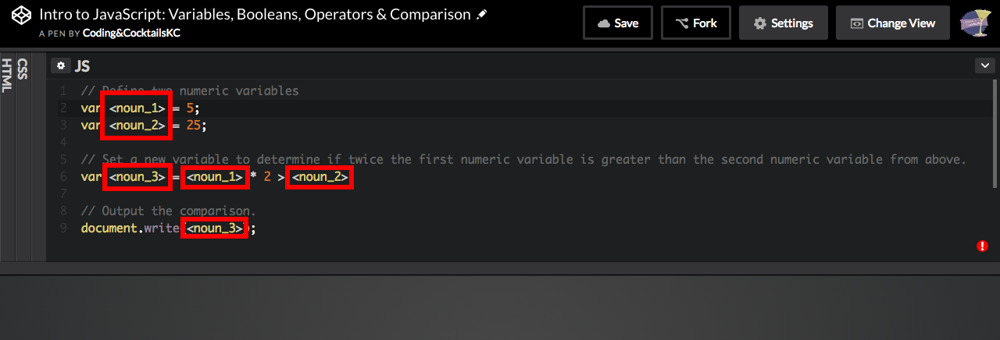
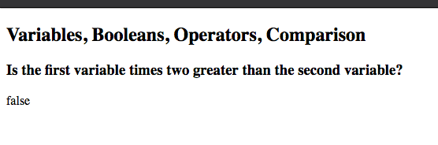

Part 1: Introducing JavaScript
In part 1 you'll start practicing some JavaScript basics covered in the presentation. This will be done Mad Libs style in an online tool called CodePen. Items to be replaced will look like this: < noun_1>. You'll replace everything including the angle brackets so < noun_1> might become drink.
A noun is a person, place or thing such as "pen" or "drink."
A verb is a word used to describe an action such as "make" or "become."
First things first
Open Slack
If you have a tip that helped you with a step on the worksheet, you can easily share it with the group in Slack. Or if there are any issues with the worksheet [we make typos or there's an update to a tool that we didn't catch before the session], we may post updates in Slack. Plus, after class is over, Slack becomes a tool for you to gain access to mentors as you go through the homework, or any other questions that arise.
Variables, Booleans, Operators and Comparison
In Google Chrome, navigate to https://codepen.io/CodingCocktailsKC/pen/BRgQrE
In the JS editor, look for the Mad Libs items to replace. Remember these are the noun or verb text surrounded by angle brackets: < noun_2>.

Make sure to replace all instances of a variable with the same noun!
Make sure to remove the angle brackets <> around the text so your code will work!
Place the cursor at the end of the last line and press enter to trigger a refresh of the display area. The lower portion of the pen should display the output of your code.

Try some other data types and comparisons! Change the first variable's value to the string "5" by adding quotation marks around the 5. Change second variable's value to the number 5 without quotation marks.
The variable value is the portion to the right of the = sign.
Remove the
* 2from line 6 then change the>to==. Make note of the comparison value in the output.After reviewing the comparison with
==, change it to===. How is the output different from the==comparison in the previous step?==only compares the value and does not care about the data type so a string "5" is the same as the number 5.===compares both the value and the data type so a string "5" is not the same as the number 5.Try out additional variable values, different mathematic operators ( +, -, *, / ) or different comparisons ( !=, !==, ==, ===, <, > ).
Calling a function with a parameter
In Google Chrome, navigate to https://codepen.io/CodingCocktailsKC/pen/EmBPYM
In the JS editor, look for the Mad Libs items to replace. Remember these are the noun or verb text surrounded by angle brackets: < noun_2>.
Make sure to replace all instances of a variable with the same noun or verb!
Make sure to remove the angle brackets <> around the text so your code will work!
Place the cursor at the end of the last line and press enter to trigger a refresh of the display area. The lower portion of the pen should display the output of your code.
Try changing the variable value or the return value of the function.